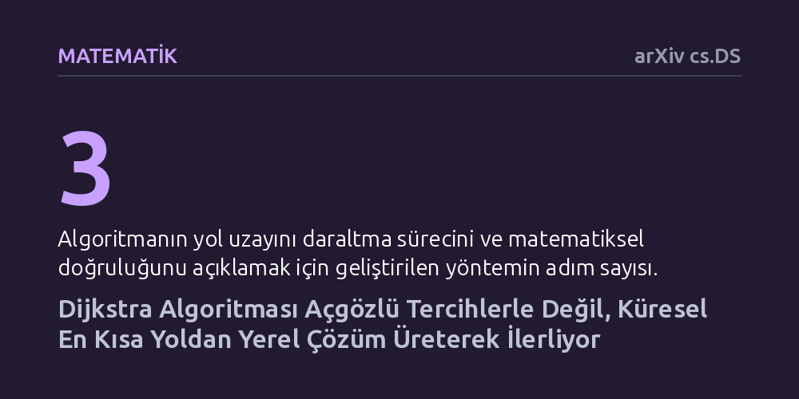

MATEMATIK · arXiv cs.DS · 2026-10-10
Çalışma, bilgisayar biliminde açgözlü kabul edilen Dijkstra algoritmasının mantığını inceleyerek yeni bir doğruluk kanıtı sunuyor. Yazar, algoritmanın yerel seçimlerle hedefe gitmek yerine, her adımda henüz çözülmemiş yollar arasındaki küresel en kısayı belirleyip yerel çözümü bundan türettiğini gösteriyor.
Yıllardır ders kitaplarında açgözlü algoritma örneği olarak öğretilen Dijkstra'nın aslında küresel en küçük değerden yerel sonuç çıkaran dinamik bir mantığa dayandığını gösteriyor.

Bilgisayar bilimlerine giriş dersi almış ya da harita uygulamalarının arka planını merak etmiş herkesin yolu mutlaka Dijkstra algoritmasıyla kesişir. 1950'lerin sonunda geliştirilen bu yöntem, bir yol ağında iki nokta arasındaki en kestirme rotayı bulmak için kullanılan en temel araçlardan biridir. Onlarca yıldır neredeyse tüm akademik kaynaklar ve ders kitapları, bu algoritmayı 'açgözlü' (greedy) yaklaşımların klasik bir temsilcisi olarak tanımlar. Açgözlü mantık, bir hedefe yürürken her adımda o an gözünüze en yakın görünen yerel kavşağı seçmenizi ve bu kısa vadeli adımların toplamda sizi en iyi küresel sonuca ulaştıracağını varsayar.
Ancak bu yaygın kabul, arkasında yanıtlanması gereken mantıksal bir soru barındırır: Yerel olarak o an en yakın görünen adımı atmak, her zaman genel olarak en doğru rotayı verir mi? Normalde açgözlü yöntemler çoğu karmaşık problemde en iyi sonuca ulaşamaz; sadece belirli özel koşullarda küresel en iyiyi yakalar. Yazar Shengbao Wang, bu noktada yerleşik sezgiye meydan okuyarak şu soruyu soruyor: Dijkstra algoritması gerçekten yerel ve kısa vadeli kararlarla mı ilerliyor, yoksa işin mantığı ders kitaplarında anlatılanın tam tersi yönde mi akıyor? Bu soru, algoritmanın çalışma hızını değiştirmese de onu anlama ve öğretme biçimimizi kökten ilgilendiriyor.
Yazar bu soruyu yanıtlamak için bilgisayar simülasyonları veya ampirik performans testleri yerine, tamamen teorik ve mantıksal bir matematiksel ispat yolu seçiyor. Algoritmanın her bir adımında arka planda gerçekleşen durum geçişlerini inceleyen yazar, 'Üç Adımlı Eleme Yöntemi' adını verdiği analitik bir çerçeve kuruyor. Bu çerçeve, algoritmanın her döngüsünü rastgele ya da körlemesine bir tercih olarak değil, olası tüm yollar uzayının adım adım ve kesin kurallarla daraltılması süreci olarak ele alıyor.
Kurulan mantıksal kurguda, henüz kesin rotası belirlenmemiş düğümler arasındaki sınır durumları inceleniyor. Algoritmanın mevcut sınırındaki her bir alternatif yol kümesi matematiksel olarak elenerek, bir sonraki adımın zorunlu olarak hangi düğümü sabitlemesi gerektiği gösteriliyor. Bu yaklaşım, sezgisel açıklamalara dayanmak yerine problemin optimal alt yapısını ve dinamik programlama ilkelerini ön plana çıkaran sade bir ispat zemini oluşturuyor.
Analizin ortaya koyduğu temel bulgu, algoritmanın çalışma yönünün geleneksel anlatının tam tersi olduğunu gösteriyor. Yaygın algı, algoritmanın elindeki yerel seçeneklerden en küçüğünü seçip bunun üzerinden küresel en iyiye vardığını söylerken, yazar durumun böyle olmadığını savunuyor. Her döngüde algoritma, henüz çözülmemiş tüm olası yollar havuzunun tamamına bakıyor ve bu havuz içindeki küresel ölçekte en kısa yolu tespit ediyor.
Dolayısıyla, o adımda hedefine ulaşılan düğüm bir 'açgözlü tercih' sonucu belirlenmiyor; aksine küresel en küçük değerin zorunlu bir sonucu olarak ortaya çıkıyor. Yazarın makalede belirttiği gibi, 'yerel en kısa yol, küresel bir minimumun doğrudan sonucu olarak elde edilir' (local shortest path is obtained as an immediate consequence of a global minimum). Başka bir deyişle, algoritma yerelden küresele doğru tırmanmıyor; her aşamada küresel en kısayı saptayarak yerel parçayı onun bir neticesi olarak çözüyor.
Bu bulgu, Dijkstra algoritmasının çalışma süresini kısaltmıyor ya da navigasyon cihazlarının rotaları daha hızlı hesaplamasını sağlamıyor. Algoritmanın kendisi aynı adımları atmaya devam ediyor. Ancak elde edilen sonuç, algoritmanın ait olduğu kavramsal aileyi yeniden tanımlıyor. Yöntem, bir açgözlü algoritmadan ziyade, problem uzayını kısıtlayarak ilerleyen ve dinamik programlama mantığıyla örtüşen deterministik bir eleme süreci olarak beliriyor.
Bu ayrım, özellikle algoritmik düşünceyi öğrenen öğrenciler ve yazılımcılar için pedagojik açıdan kıymetli bir berraklık sunuyor. Bir algoritmayı doğru sınıfa koymak, benzer optimizasyon problemlerinde yeni algoritmalar tasarlarken doğru zihinsel modelleri kurmayı sağlar. Yine de bu çalışmanın henüz bağımsız hakem heyetinden geçmemiş bir önbaskı olduğunu ve akademik camiada tartışılarak doğrulanması gerektiğini unutmamak gerekir.